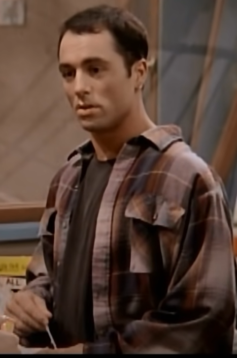

"I don't go to movies. I don't like movies. Most movies suck. Someone says, "Hey Joe! Wanna go to a movie?" You know what I say? I say, "I don't like movies. I don't go to movies. Most movies suck." -- Joe Rogan, News Radio
The suspense and simplicity of placing the entire plot in one location is unheard of.
The only movie that you have to rewatch in order to fully understand what is going on!
A movie about that one teacher we wish we all had to inspire us to do great things.
The things you own end up owning you.
Really underrated independent movie starring Jesse McCartney.